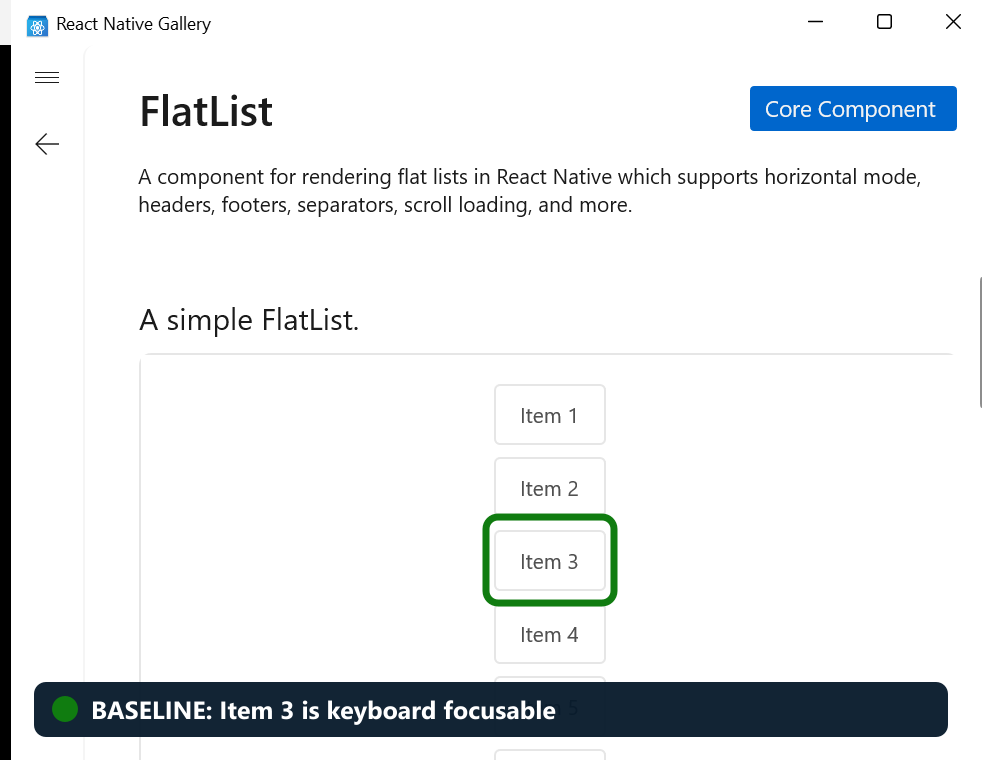
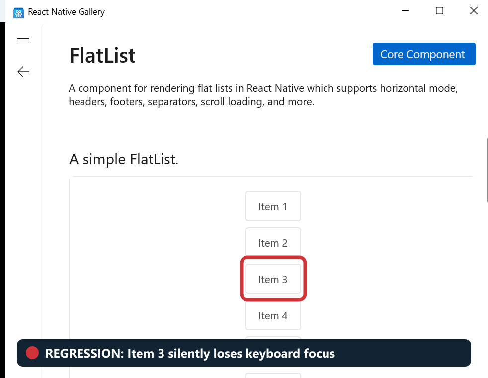
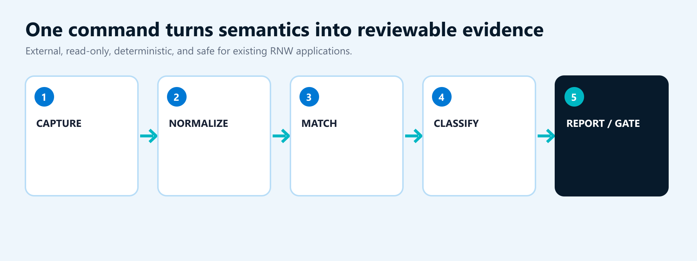
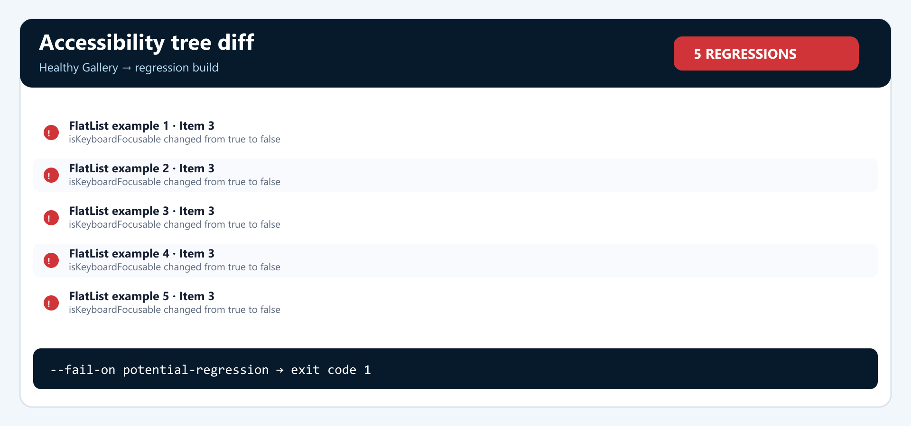

Fabric migrations
Verify semantic parity across architecture changes.
Accessibility Tree Snapshot & Diff for React Native Windows
Built end-to-end during FHL: implementation, tests, hardening, live validation, and demo.
Presented by Anukrati Agrawal + AI
A UI can look pixel-perfect while becoming unusable to keyboard and screen-reader users.


Capture two UI Automation trees, compare them deterministically, and fail when semantics regress.

Run locally, during code review, or as a CI quality gate.
rnw-a11y capture --process RNTesterApp-Fabric --output before.jsonrnw-a11y capture --process RNTesterApp-Fabric --output after.jsonrnw-a11y diff before.json after.json --fail-on potential-regressionExit code 1 makes the result actionable.
Especially when visual review is not enough.
Verify semantic parity across architecture changes.
Catch changed controls, roles, providers, and hierarchy.
Prove the fix without introducing collateral regressions.
Compare RNW, React Native, and Windows SDK versions.
Create repeatable semantic evidence across branches.
Block lost names, controls, and keyboard focusability.
Hardened through repeated bug-focused review and live Windows validation.
Stops at configured limits before requesting more of the accessibility tree.
Matches elements within the same parent to avoid cascades of false changes.
Marks interrupted captures as incomplete instead of reporting a misleading clean result.
Excludes sensitive values and sanitizes application-controlled report text.
The embedded video uses the actual healthy and broken Gallery states and the real tool output.
One shared renderer caused five invisible keyboard regressions.

The complete capture, diff, reporting, and gate workflow works today.
Standalone and read-only.
Gallery, RNTester, Playground, and desktop apps.
Reusable foundation for focus diagnostics.
The goal is fewer surprises when manual keyboard and Narrator validation runs.
The implementation branch is available today.
packages/@rnw-scripts/accessibility-diagnostics
Run ityarn workspace @rnw-scripts/accessibility-diagnostics rnw-a11y …
FHL implementationfhl/accessibility-tree-diff · 6909efe740These three extensions offer the clearest engineering and customer impact.
Run approved Gallery and RNTester scenarios in CI, post the diff on the pull request, and block new regressions.
Record focus movement and flag loops, unexpected jumps, missing labels, or focus landing on hidden content.
Highlight changes in a browser and manage approved baselines without reading raw JSON.
First milestone: automate one repeatable RNW Gallery scenario in CI.
Capture. Compare. Catch. Block.